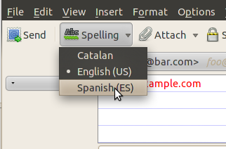
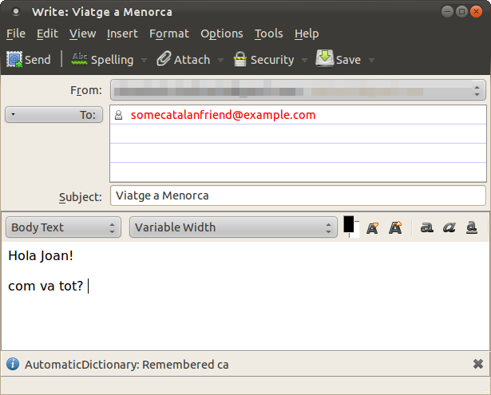

Automatic dictionary extension for Thunderbird
Target
Users that write emails in diferent languages very often to the same addresses each time.
When writing a new email or answering one, get the dictionary language correctly setted.
The extension will keep a record of the language previously selected for the recipients of the mail and switch it.
It can guess the language based on the domain of the recipients of the mail.
Usage
- 
- 
To associate a language to a recipient:
- Go to "Compose message"
- Write it's address in the TO field
-
Choose the language you want to assign
- There will apear a message on the status bar announcing that that language has been assigned to a recipient.
You can assign various recipients at once, setting them all to the language.
Caution, the plugin only assigns the languages to the recipients when the language is changed, so if the laguage set by default is the one you want to assign to the users, you'll have to change the language to any other, wait the extension to register that (the status bar will change), and then set the target language.
Once a language is setted to a user, each time you Compose a message and that recipient appears in the "TO" recipients, the language will be set to that.
Development plan
Version 1.x -> Support for Conversions addon
Version 2.x -> Detect based on text In case no previous data is avaliable or there is not a unique language for the recipients, the extension can try to guess it based on the misakes that appear aplying the most used dictionaries.
Contributors
- beltrachi
- Marcos Diez